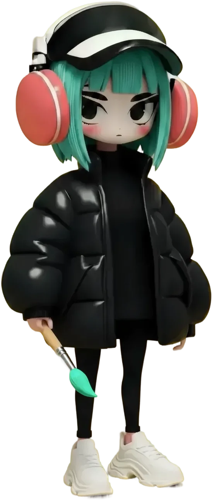
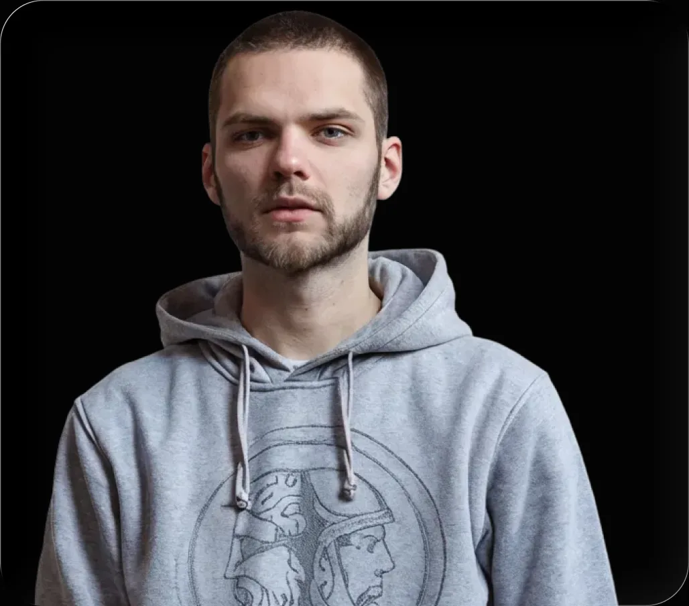
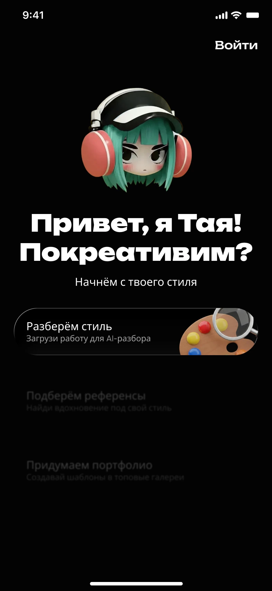
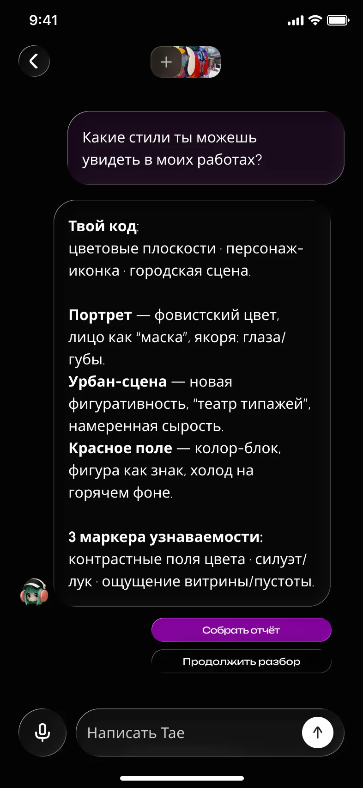
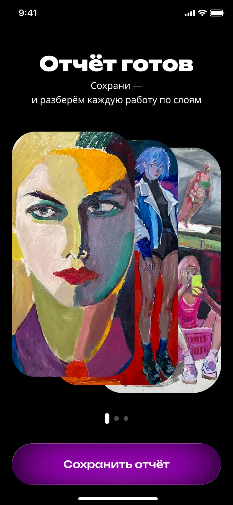
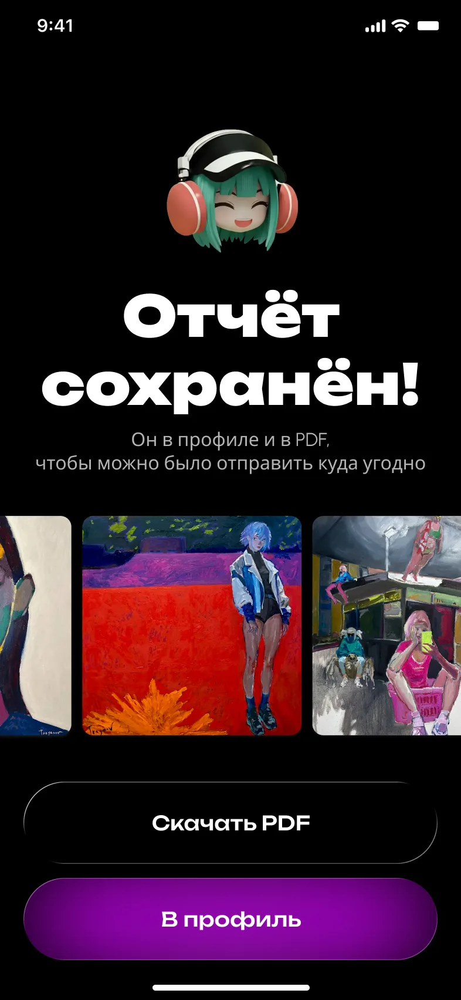
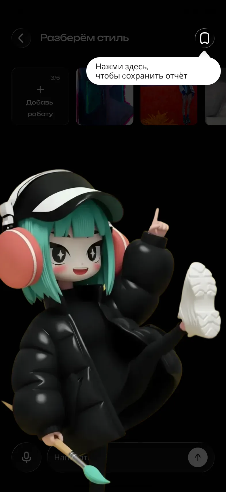
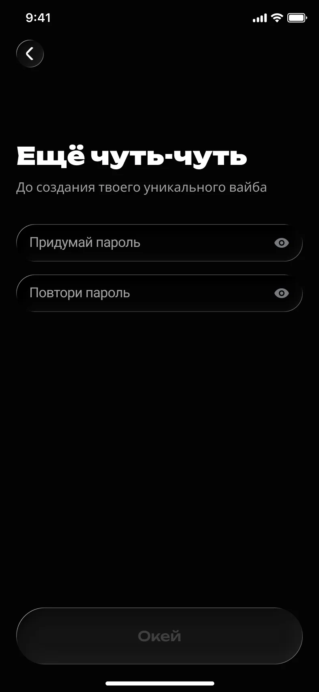
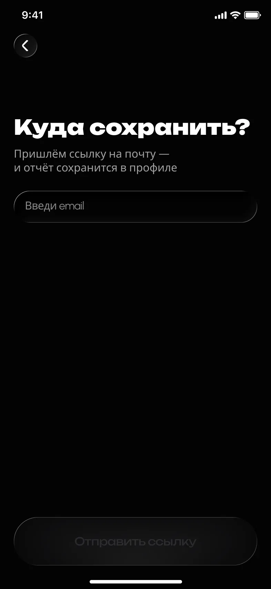
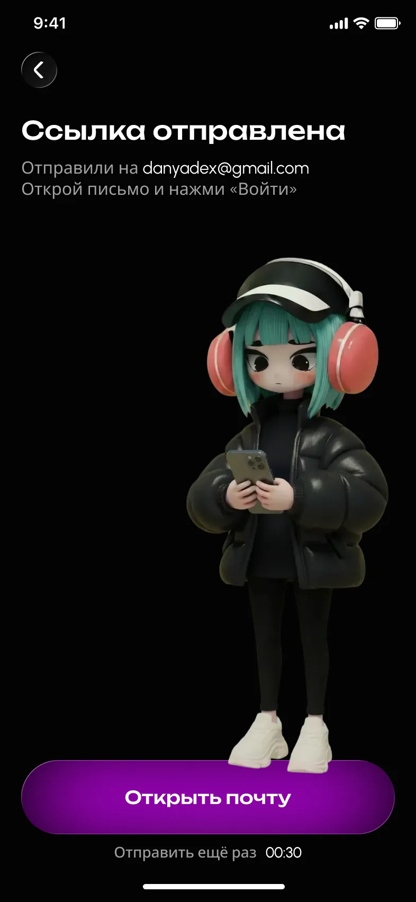

Понять свой язык
Увидеть развитие стиля, получить независимую обратную связь без оценок и собрать портфолио
TAYA AI

ПРОБЛЕМА
Работ много, а общий почерк не складывается:
портфолио собрано в кучу, и непонятно, на чём ставить акцент

«Хочу понять, чем мой стиль отличается от других — и показать это красиво,
в своём портфолио»
Увидеть развитие стиля, получить независимую обратную связь без оценок и собрать портфолио
Кажется, что «все работы разные и ни о чём»,
а сильные стороны объективно не видны
АНАЛИЗ КОНКУРЕНТОВ
| Сервис | Вдохновение | Анализ работ | UX-простота | Позиционирование | Вовлечение |
|---|---|---|---|---|---|
| Behance | Норм | Нет | Норм | Сильное | Норм |
| Супер | Нет | Супер | Слабое | Супер | |
| Runway ML | Норм | Поверхностно | Норм | Слабое | Норм |
Ни один сервис не разбирает работы художника по сути — эту нишу и занимает Тая
РЕШЕНИЕ
Слава загружает 3–5 работ, а Тая сама предлагает, с чего
начать, — и через диалог собирает разбор стиля в отчёт

01Вместо пустого поля —
три готовых входа: референсы, вдохновение, портфолио

02Чипсы «Визуальный код», «Стиль», «Прайс» подсказывают, о чём спросить

03Цвет, композиция и три маркера узнаваемости —
по каждой работе

04Отчёт сохраняется, к нему возвращаются, его можно скачать в PDF
ИТЕРАЦИЯ
Эвристическая оценка показала, что сохранение ломает сценарий:
иконку в шапке без тултипа не находят, а пароль обрывает момент «хочу увидеть отчёт»




ТЕСТИРОВАНИЕ
Немодерируемый тест в Pathway и два модерируемых интервью.
Задание: получить разбор своих работ и сохранить отчёт в профиле
Пользователи хотят выбирать несколько чипсов подряд и комбинировать их
в одном разборе
Отчёт хотят скачать как PDF или artist statement и отправить заказчику
Что отчёт сохранился, понятно, но где он лежит и как к нему вернуться — не всегда
Выборка небольшая: 11 человек в Pathway и 2 модерируемых сессии.
Цифры показывают, что сценарий понятен, а не как он работает на масштабе
ЧТО ДАЛЬШЕ
Показать структуру отчёта и то, как им пользоваться дальше
Сделать путь к сохранённому
результату предсказуемым
Разрешить несколько чипсов в одном разборе и единый итоговый отчёт
Приоритеты — из кластеризации результатов тестирования по матрице impact / effort